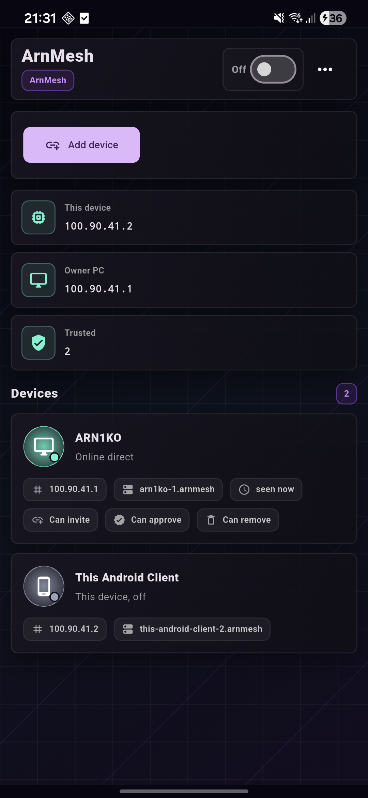

This device
100.90.42.2
Owner-approved mesh lobby
ArnMesh
Turn your own PCs, laptops, and Android devices into one private lobby with stable mesh IPs, direct links when they are available, and relay fallback when NAT starts being difficult.
Windows + Android
Owner approved
Direct + relay
ArnMesh
ArnMeshOn
Owner PC
100.90.42.1
Trusted
3 devices
Devices
Home desktop
Online direct
This laptop
Online direct
Android phone
Online relay
Network flow
Local-style reachability without turning everything into a full VPN.
ArnMesh is built for a trusted device mesh, not an anonymous exit network. You approve who joins, the coordinator helps devices discover each other, and the tunnel focuses on mesh traffic instead of replacing your whole internet path.
Approval loop
New devices wait for the owner before they can participate in the mesh.
Stable mesh IPs
Approved devices keep predictable 100.90.x.x addresses and .arnmesh names.
Relay fallback
Direct UDP is preferred first, then encrypted relay keeps the lobby alive.
Modes
Two common ways to use the mesh.
Home access
Reach your own desktop, laptop, and phone over stable mesh names when you are away from your home network.
LAN session
Build a private session for friends, approve the devices you trust, and keep the setup feeling closer to a local lobby than a public VPN.
Control board
The parts already in the app.
QR and code join
Invite Android by QR or bring another PC in with a short import code.
Owner approval
The profile owner stays in charge of who becomes trusted inside the mesh.
Windows service
Installer, tunnel driver, firewall rules, and auto-start behavior are part of the setup.
Local private keys
Private tunnel keys are intended to stay local to the device instead of the coordinator.
On screen
A product view that feels closer to the actual app.

Live Android screen
This is a fresh capture from the USB-connected phone, so the site now uses the real ArnMesh UI instead of old washed-out placeholders.
What stays visible
The interface keeps the useful things front and center so you can scan the mesh state fast instead of hunting through decorative blocks.
Owner device and mesh IP
Trusted device count
Direct or relay reachability
Approval and invite capabilities
FAQ
A few things people ask before they install.
Is ArnMesh a normal VPN provider?
No. It is a private mesh for devices you approve and people you trust. It is not meant to replace a commercial anonymity VPN.
Does traffic always go through the VPS?
No. ArnMesh tries direct UDP first. The relay is there for encrypted fallback when direct routing is not available.
Why does Windows use an installer?
Windows setup needs to place the GUI, local service, tunnel components, firewall rules, and uninstall entry so the mesh survives reboot cleanly.
Can I use another PC or Android phone later?
Yes. Generate an invite on the owner device, import it on the new device, then approve it from the owner profile.
Will updates wipe my existing profiles?
Normal updates are intended to replace the app and service files while keeping profiles, device identities, and local keys in their separate storage locations. You should still keep backups of important devices and test beta builds carefully.
Why is the main Windows download a zip?
Some browsers are calmer with a zip than with a raw executable. Right now the
public release is distributed as ArnMeshSetup.zip, so that is the
default Windows download path on the site.
What happens when direct UDP is blocked?
ArnMesh keeps trying direct paths first. If those paths are not reachable, the tunnel can fall back to the encrypted relay so devices still stay reachable inside the mesh.
Does the owner have to approve every device forever?
The owner approves the initial join. After that, trusted-device permissions can let selected members invite other devices, depending on how the profile is configured.
What does ArnMesh need on Windows to work?
The installer sets up the desktop app, local service, tunnel engine usage, firewall rules, and uninstall entry. That is why Windows setup is more than just copying one `.exe` into a folder.
Is Android on the Play Store yet?
Not yet. Right now Android is distributed as an APK, so installation is manual until a store release is ready.